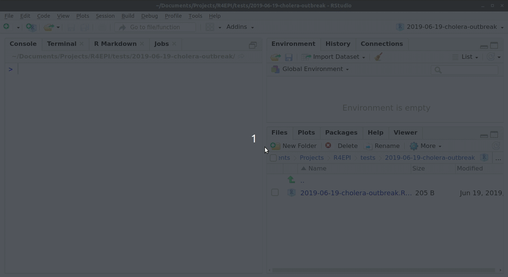
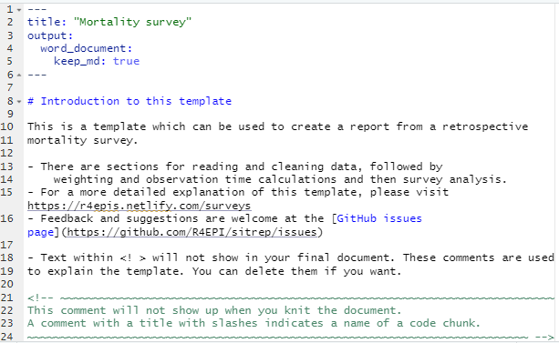
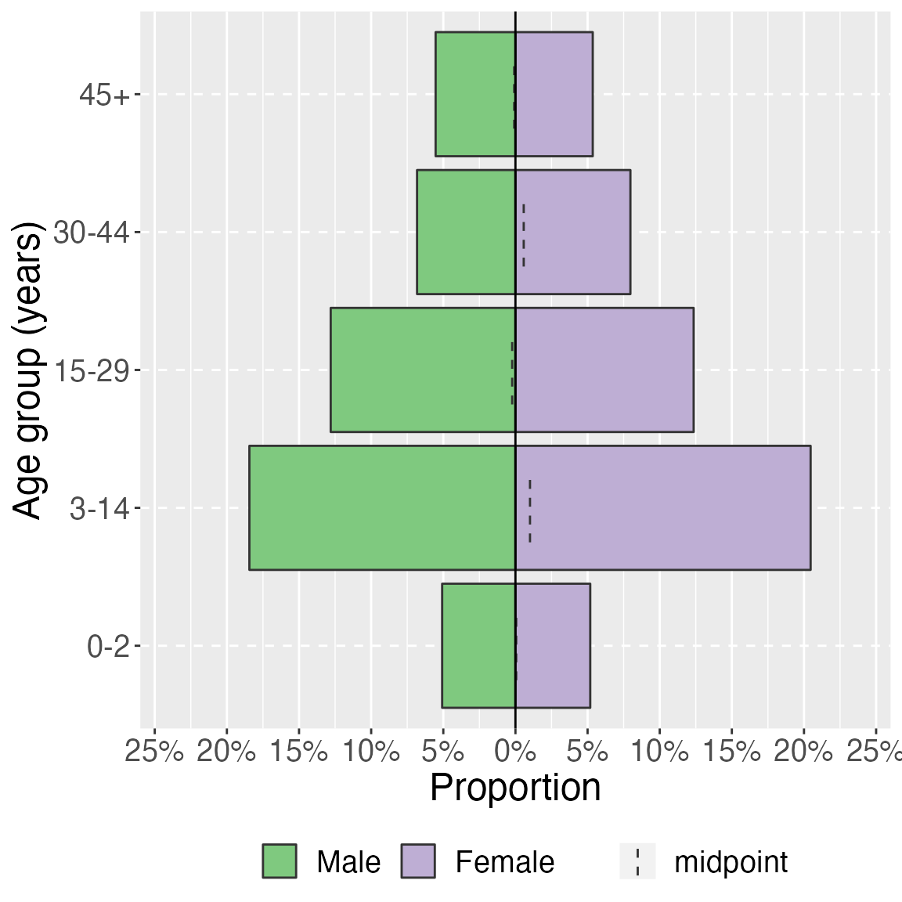
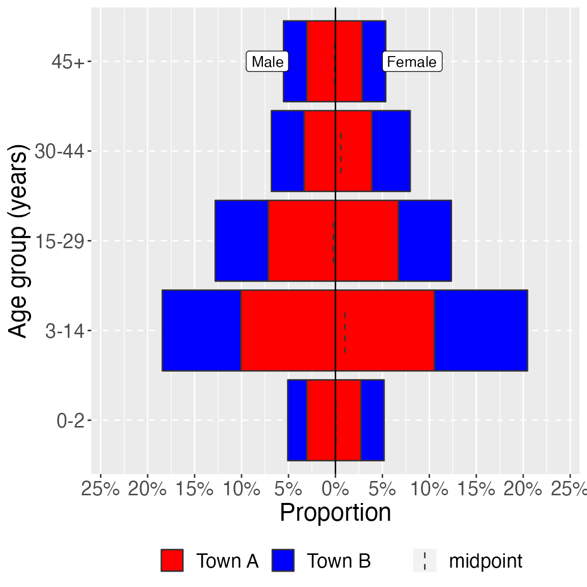
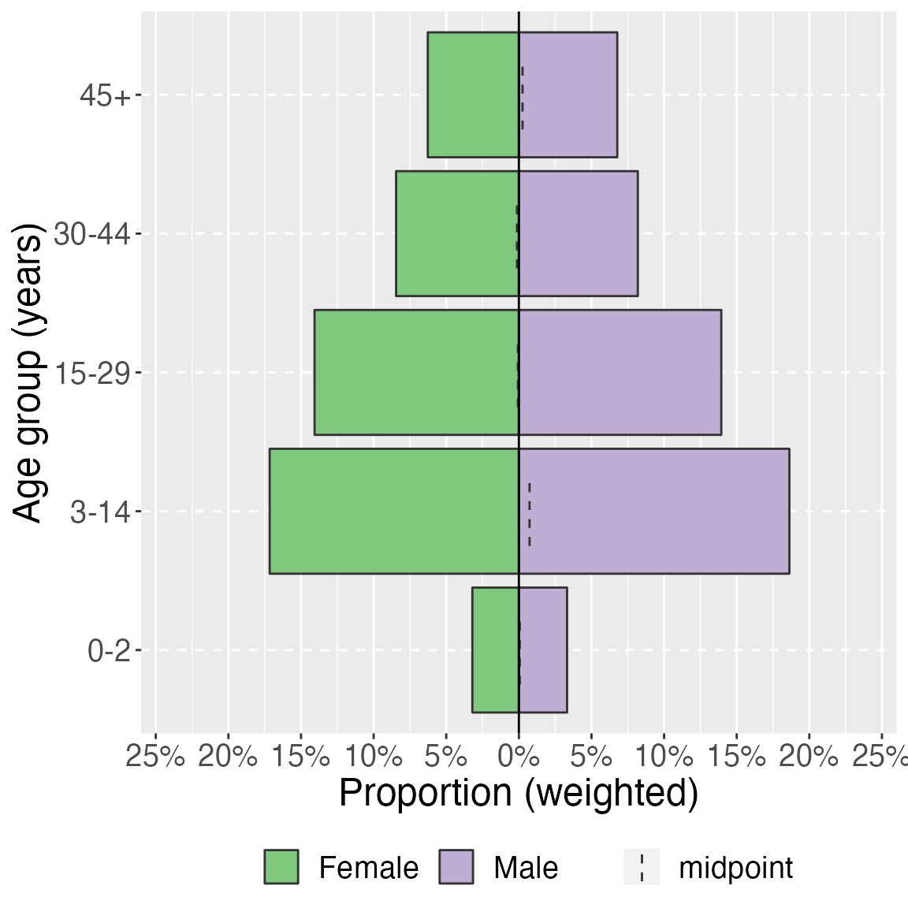

vignettes/Surveys_Walkthrough.Rmd
Surveys_Walkthrough.RmdThis page demonstrate use of the {sitrep} R Markdown template for analysis of a retrospective mortality survey, using data that was produced using Kobo, a common survey and data collection tool in settings where MSF works. The data do not use the standard MSF EBB-approved data dictionary, and therefore represent a challenging use case for data cleaning.
To begin using R, ensure you have the following free software installed:
If you are a new R user, we highly suggest doing the following before beginning to use these templates:
Once you have an understanding of how R and RStudio work, know how to run basic commands, have practiced running R code on your computer, and have read about R Markdown reports, then you are ready to use our {sitrep} R Markdown templates to produce situation reports.
To access the templates, you must install the “sitrep” R package. R packages are often written in text with curly brackets, like this: {sitrep}
# install the {remotes} package, which is used to install the {sitrep} package
install.packages("remotes")
# use {remotes} to install {sitrep} from Github
remotes::install_github("R4EPI/sitrep", dependencies = TRUE)Working in R is best done from within an “RStudio project” that contains all the datasets, R scripts, and outputs for a single analytical project.
You should review the Epidemiologist R Handbook chapters on RStudio projects. Below are brief instructions on how to create a new RStudio project:
Select File -> New Project from the top RStudio menu.
Creating a new RStudio project will create:
- A new project directory (folder)
- A R project file (.Rproj) in the project folder that serves as a shortcut to open the project via RStudio
Note:
- You can make sub-folders for data, scripts, etc.
- All files produced by R scripts saved to the project will also save into the project folder
- Navigate and open project files, such as scripts, using the Files tab of the lower-right RStudio pane.
*For an RMarkdown to produce the final report correctly, you must have read/write permissions for the location of the R project folder. On an MSF computer this is generally the c:/temp folder.
One significant benefit of working within an R project is that all associated files (datasets, etc.) are located within the same folder. Thus, to send the project to someone else, simply zip the folder and send. All files referenced in the scripts are included and if you utilized the {here} package, no file paths are unique to your computer.
For this vignette, you will need to open the template “Mortality survey”. See the instructions and GIF below.
 ### Folder structure
It is highly recommended that you store your R Markdown script and any data used in the same folder (the RStudio project). You should review the Epidemiologist R Handbook chapters on RStudio projects.
This website will not cover the detailed aspects of designing, implementing and analysing a survey in MSF contexts. There are many other training and briefing materials that address this aspect. We will cover a few crucial concepts which are required for the understanding and use of the templates for your survey analysis.
For further survey methodology resources please see:
There are different ways to sample populations for surveys. The most commonly used in MSF settings are:
The templates can accommodate analysis of data from all of these sampling designs.
Before implementing a survey you will need to calculate the sample size for that survey. Note that a chapter on samples size is anticipated to be in the Epidemiologist R Handbook soon.
When calculating a sample size for your survey you take the below parameters into consideration:
You will need to use an estimate of the prevalence/coverage of the your main outcome of interest in your to-be-surveyed population (prevalence of malnutrition, measles vaccination coverage, etc.). You will use published or grey literature to determine a logical estimate of this parameter.
The largest sample size you will need will be that which is calculated using an estimate of prevalence of 50%. The closer to 0% or 100% prevalence you set your estimate, the smaller your sample size will be. Therefore, if you have no idea what your estimate of prevalence is, try and use 50% and the largest possible sample size.
The easiest way to remember the design effect (which we usually refer to as DEFF), is that it is a measure of the variability of the outcome of interest within your clusters (if you are conducting a cluster based survey) and between your clusters.
The higher the DEFF, the higher the variability between clusters and the higher the probability that subjects within a cluster are similar.
In a well designed survey, you will aim to have a calculated DEFF for your outcome of interest as close as possible to 1. This is because a DEFF of 1 means that your survey design has approached Simple Random Sampling (SRS) for your outcome of interest. SRS is the gold standard in survey design, but often not possible in MSF contexts. In general, in two-stage cluster sampling surveys, we would assume a DEFF of 2.
Mathematically DEFF is calculated as:
DEFF=1+(1-n) * rho where n=sample size of your survey and rho=intraclass coefficient
When analysing your survey data, we often recalculate the DEFF for the main outcomes of interest. This because the DEFF will give you a good estimate on whether the survey design and sampling approach made sense in your survey for your outcome of interest.
The precision around your estimate stipulates how close to the your estimate you would like the 95% confidence interval of your prevalence estimate to fall.
For example: you have calculated a 72% measles vaccination coverage in your study population. You would like to ensure that the 95% confidence interval is narrow (between 70-74%); thus you would set your precision at 2% (2% above and below 72%).
The lower your precision, the higher your sample size calculation will be.
You only use the estimate of the precision when calculating a sample size before your survey.
The templates assume that data will have been collected using mobile data collection or will have been entered into an electronic database (Excel, Epi Data, Redcap etc.).
We recommend that you try and establish generic data dictionaries for mobile data collection (through template questionnaires) or through template databases. This will improve the consistency of the naming of your variables and will facilitate the frequent and systematic use of the Survey Templates.
We have designed the templates to run through a similar series of analytical questions in the same order:
The sampling strategy MUST be considered by the epidemiologist using the templates in order to ensure an appropriate weighting is applied to the analysis.
The very top of the R Markdown template consists of a header surrounded by --- lines. This is called the “YAML” header, in which you can edit the title of your document. The other settings in the header define the default document type produced (Microsoft Word) when the RMarkdown is “knit”.

This text just below the header is for your reference only. If left alone it will appear at the beginning of your report, so you should replace it with a more relevant introduction. Any text you write here can be formatted with italics, bold, bullets, numbers, tables, and in-line code. See this RMarkdown cheatsheet for tips on formatting.
The first code chunk, setup, is very important and must be kept. When the final report is knit, this chunk will run without producing any output, but it is required for the template to work correctly.
This setup code chunk does the following:
Set default settings for tables such as size, error handling, and display of missing values
Run a command using the {pacman} package to install and load the R packages that are used in this template.
Set default text size in graphic plots
Establish visual theme settings for epidemic curve plots
| R package | Use |
|---|---|
| {knitr} | to create the output document (pdf, doc, html) |
| {here} | to locate files within the RStudio project |
| {rio} | to import data from various formats (csv, xlsx, tsv, etc.) |
| {janitor} | to clean and summarise data |
| {dplyr} | to clean and handle data |
| {tidyr} | to handle and clean data |
| {forcats} | to clean the data and create ordinal columns (“factors”) |
| {stringr} | to clean and handle text/characters (known as “strings”) |
| {ggplot2} | to visualise your data in plots |
| {lubridate} | to handle dates and times |
| {gtsummary} | to produce summary tables |
| {flextable} | to format summary tables for presentation |
| {purrr} | to iterate processes - repeating the same process many times with small variations |
| R package | Use |
|---|---|
| {sitrep} | includes the templates and functions useful for field epidemiology |
| {ggalluvial} | to make alluvial flow diagrams/plots |
| {apyramid} | to make demographic pyramid plots |
| {parsedate} | to interpret “messy” date formats |
| {survey} | to provide survey analysis functions |
| {srvyr} | to make the {survey} package easier to use |
| {matchmaker} | to clean data using data dictionaries |
| {labelled} | to add labels to columns |
# Install and load required packages for this template
pacman::p_load(
knitr, # create output docs
here, # find your files
rio, # for importing data
janitor, # clean/shape data
dplyr, # clean/shape data
tidyr, # clean/shape data
forcats, # manipulate and rearrange factors
stringr, # manipulate texts
ggplot2, # create plots and charts
ggalluvial, # for visualising population flows
apyramid, # plotting age pyramids
sitrep, # MSF field epi functions
survey, # for survey functions
srvyr, # dplyr wrapper for survey package
gtsummary, # produce tables
flextable, # for styling output tables
labelled, # add labels to variables
matchmaker, # recode datasets with dictionaries
lubridate, # working with dates
parsedate, # guessing dates
DT # interactive tables for this walkthrough
)Data used for this template should be in a “linelist” format, with one row for each survey respondent person. You have two options:
Use data collected with Kobo
Use data that was not collected with Kobo
Each of these options will result in the use of different code chunks in the template. This vignette uses data collected with Kobo.
You can deactivate (place a # comment symbol to the left of) or delete the code in the code chunk read_fake_data, which is used to generate fake data for the template.
This vignette will demonstrate using data collected with Kobo.
For this vignette, the household-level information and the individual-level information are stored in an .xslx spreadsheet with two sheets. The spreadsheet is named “mortality_survey_data.xlsx”, and is stored in the {sitrep} R package. We created the function download_survey() which will copy this file into a location of your choice on your computer.
Run the commands below. Now look for a pop-up window and use it to select your RStudio project folder (the pop-up may appear behind RStudio out-of-sight).
# run the command below as it is (empty parentheses).
# Look for a pop-up window, and select your RStudio project as the destination
download_survey()Now that the data are saved in your RStudio project, you can import them into R using import(), as described in the Epidemiologist R Handbook’s Import and export chapter.
To import a specific sheet from an xlsx spreadsheet, use the which = argument as shown below. You can also use the na = argument to specify a value that should be converted to NA across the entire sheet (e.g. 99 or “Missing”, or "" which represents an empty space).
Th example command below imports an Excel spreadsheet called “mortality_survey_data.xlsx”, which is not password protected, and is stored in the RStudio project you are using for this analysis. The which = argument of import() specifies that the sheet “Mortality Survey” should be imported. You would edit this command as appropriate for your situation.
# example code for importing an Excel file saved in RStudio project
# Import the sheet containing household responses
survey_data_hh <- import("mortality_survey_data.xlsx"), which = "Mortality Survey", na = "")
# import the sheet containing individual responses
survey_data_ind <- import("mortality_survey_data.xlsx"), which = "hh_member", na = "")Here is a preview of the first 25 entries with household information:
And here is a look at the first 25 individual responses:
As we are using a Kobo dataset that has both individual and household data (stored in separate data frames), we will need to combine them using code in the merge_data_levels code chunk.
Uncomment this code, and replace the defaults to reflect our data sets, as below:
## join the individual and household data to form a complete data set
study_data_raw <- left_join(survey_data_hh, survey_data_ind, by = c("_index" = "_parent_index"))Here are the first 25 rows of this combined data frame study_data_raw. Scroll to the far right side to see the joined columns from survey_data_ind:
This dataset was produced with Kobo, but does not exactly align with the MSF data dictionary for mortality surveys. Therefore, for this report we must treat it as “non-Kobo” and take actions to align it with the expected column names.
Therefore, to prepare the data you should comment/deactivate with # the chunk called prep_kobo_data. Instead, we will use the approach outlined in the code chunk prep_nonkobo_data.
The main activity to prep the data is alignment of the column names to those expected by this R Markdown template.
First, we can un-comment and run the command that creates study_data_cleaned as an exact copy of study_data_raw. This new data frame will be fully cleaned in subsequent sections.
study_data_cleaned <- study_data_rawNext, we want to rename some of our columns. Using the command msf_dict_rename_helper("mortality", varnames = "name") we get a “helped” command copied to our clipboard. This contains many more variables than we need, but it is useful to review.
Click to see this code chunk>
## Add the appropriate column names after the equals signs
#
# linelist_cleaned <- rename(linelist_cleaned,
# age_months = , # integer (REQUIRED)
# age_years = , # integer (REQUIRED)
# arrived = , # yn (REQUIRED)
# care_fever = , # yndk (REQUIRED)
# care_illness_recent = , # yndk (REQUIRED)
# cause = , # cause (REQUIRED)
# cause_illness = , # cause (REQUIRED)
# cluster_number = , # integer (REQUIRED)
# consent = , # yn (REQUIRED)
# date = , # date (REQUIRED)
# date_arrived = , # date (REQUIRED)
# date_birth = , # date (REQUIRED)
# date_death = , # date (REQUIRED)
# date_left = , # date (REQUIRED)
# died = , # yn (REQUIRED)
# end = , # end (REQUIRED)
# fever_now = , # yndk (REQUIRED)
# fever_past_weeks = , # yndk (REQUIRED)
# height = , # integer (REQUIRED)
# household_number = , # integer (REQUIRED)
# ill_hh_number = , # integer (REQUIRED)
# ill_recently = , # yndk (REQUIRED)
# left = , # yn (REQUIRED)
# member_number = , # integer (REQUIRED)
# no_care_illness = , # no_care (REQUIRED)
# no_consent_reason = , # no_consent (REQUIRED)
# place_violence = , # viol_place (REQUIRED)
# pregnant = , # yn (REQUIRED)
# reason_no_care = , # no_care (REQUIRED)
# sex = , # sex (REQUIRED)
# start = , # start (REQUIRED)
# uniform = , # ynnr (REQUIRED)
# village_name = , # village (REQUIRED)
# violence_nature = , # violence_nature (REQUIRED)
# violence_nature_other = , # text (REQUIRED)
# violent_episode = , # ynnr (REQUIRED)
# violent_episodes_number = , # integer (REQUIRED)
# weight = , # integer (REQUIRED)
# after_leaving_hf = , # text (optional)
# anc_bednet = , # yndk (optional)
# anti_malarials = , # yndk (optional)
# anti_malarials_listed = , # anti_malarials (optional)
# axiliary_temp = , # integer (optional)
# bednet = , # yn (optional)
# born = , # yn (optional)
# born_later = , # yn (optional)
# care_dying = , # yndk (optional)
# care_illness_df = , # yndk (optional)
# care_illness_last = , # yndk (optional)
# cause_illness_df = , # illness (optional)
# cause_illness_last = , # cause (optional)
# cause_illness_last_other = , # text (optional)
# cause_illness_other = , # text (optional)
# cause_other = , # text (optional)
# cost_consultation = , # integer (optional)
# cost_consultation_df = , # integer (optional)
# cost_consultation_last = , # integer (optional)
# cost_treatment = , # integer (optional)
# cost_treatment_df = , # integer (optional)
# cost_treatment_last = , # integer (optional)
# current_status = , # status (optional)
# date_death_alt = , # date (optional)
# date_violence = , # date (optional)
# deviceid = , # deviceid (optional)
# diarrhoea_fever_2weeks = , # yndk (optional)
# education_level = , # education_level (optional)
# height_mal = , # integer (optional)
# hemocue = , # integer (optional)
# herbal_medicines = , # herbs (optional)
# households_building = , # integer (optional)
# last_person_ill = , # yndk (optional)
# malaria_episodes = , # integer (optional)
# malaria_test = , # test (optional)
# malaria_treatment = , # yn (optional)
# malaria_treatment_infant = , # treatment (optional)
# malaria_treatment_preg = , # treatment (optional)
# measles_vaccination = , # yn (optional)
# muac = , # integer (optional)
# muac_mal = , # integer (optional)
# n1 = , # note (optional)
# n10 = , # note (optional)
# n11 = , # note (optional)
# n12 = , # note (optional)
# n13 = , # note (optional)
# n2 = , # note (optional)
# n3 = , # note (optional)
# n4 = , # note (optional)
# n5 = , # note (optional)
# n6 = , # note (optional)
# n7 = , # note (optional)
# n8 = , # note (optional)
# n9 = , # note (optional)
# no_care_illness_df = , # no_care (optional)
# no_care_illness_df_other = , # text (optional)
# no_care_illness_last = , # no_care (optional)
# no_care_illness_last_other = , # text (optional)
# no_care_illness_other = , # text (optional)
# no_consent_other = , # text (optional)
# oedema = , # measure (optional)
# oedema_mal = , # measure (optional)
# period_illness_hsb = , # period (optional)
# period_illness_hsb_number = , # integer (optional)
# period_illness_viol = , # period (optional)
# period_illness_viol_number = , # integer (optional)
# place_care_dying = , # place_death (optional)
# place_care_illness = , # place_hf (optional)
# place_care_illness_other = , # text (optional)
# place_death = , # place_death (optional)
# place_death_hsb = , # place_death (optional)
# place_death_hsb_other = , # text (optional)
# place_death_other = , # text (optional)
# place_death_viol = , # place_death (optional)
# place_death_viol_other = , # text (optional)
# place_first_hf = , # place_hf (optional)
# place_first_hf_df = , # place_hf (optional)
# place_first_hf_df_other = , # text (optional)
# place_first_hf_other = , # text (optional)
# place_healthcare = , # place_treatment (optional)
# place_healthcare_other = , # text (optional)
# place_second_hf = , # place_hf (optional)
# place_second_hf_df = , # place_hf (optional)
# place_second_hf_df_other = , # text (optional)
# place_second_hf_other = , # text (optional)
# place_violence_other = , # text (optional)
# present_start = , # yn (optional)
# present_today = , # yn (optional)
# random_hh = , # calculate (optional)
# random_hh_note = , # note (optional)
# rdt = , # test2 (optional)
# read_write = , # yn (optional)
# reason_first_hf_selected = , # reason_hf (optional)
# reason_first_hf_selected_df = , # reason_hf (optional)
# reason_first_hf_selected_df_other = , # text (optional)
# reason_first_hf_selected_other = , # text (optional)
# reason_no_care_hsb = , # no_care (optional)
# reason_no_care_hsb_other = , # text (optional)
# reason_no_care_other = , # text (optional)
# reason_not_present = , # reason_absent (optional)
# reason_second_hf_selected = , # reason_hf (optional)
# reason_second_hf_selected_df = , # reason_hf (optional)
# reason_second_hf_selected_df_other = , # text (optional)
# reason_second_hf_selected_other = , # text (optional)
# remember_arrival = , # yn (optional)
# remember_death = , # yn (optional)
# remember_departure = , # yn (optional)
# remember_dob = , # yn (optional)
# remember_violence_date = , # yn (optional)
# source_date_death_hsb = , # date (optional)
# source_date_death_viol = , # date (optional)
# source_death_hsb = , # source (optional)
# source_death_viol = , # source (optional)
# source_money_df = , # money_source (optional)
# source_money_df_other = , # text (optional)
# source_money_last = , # money_source (optional)
# source_money_last_other = , # text (optional)
# source_written_death_hsb = , # text (optional)
# source_written_death_viol = , # text (optional)
# source_written_hsb = , # text (optional)
# source_written_viol = , # text (optional)
# spleen = , # integer (optional)
# start_illness = , # period (optional)
# start_illness_number = , # integer (optional)
# status_df = , # status (optional)
# team_number = , # integer (optional)
# thick_smear = , # yn (optional)
# thin_smear = , # yn (optional)
# today = , # today (optional)
# treatment_delay = , # time (optional)
# treatment_delay_df = , # time (optional)
# vaccination_card = , # yn (optional)
# village_other = , # text (optional)
# visit_second_hf = , # yndk (optional)
# visit_second_hf_df = , # yndk (optional)
# weight_mal = # integer (optional)
# )
# We can edit the above, or simply refer to it to construct our rename() command, as below:
study_data_cleaned <- rename(study_data_cleaned,
# pattern is NEW name = OLD name
uid = `_index.y`,
consent = household_consents_to_particip,
age_years = age_in_years,
age_months = age_in_months,
date_arrived = doa,
date_birth = dob,
date_left = dod,
date_death = dodeath,
member_number = no_household
)In the template, there is a command that creates the column health_district. For us, this information is already stored in the column location. So we run this command to re-name location as health_district.
study_data_cleaned <- rename(study_data_cleaned,
health_district = location)Finally, we run the command to clean the column names. The clean_names() function from the {janitor} package will standardise the syntax of all the column names (headers) by converting all to lowercase, replacing spaces and special characters with underscores, etc.
## define clean variable names using clean_names from the janitor package.
study_data_cleaned <- clean_names(study_data_cleaned)Further data cleaning will occur in later data cleaning chunks.
Surveys conducted with Kobo produce a data dictionary file, in which information about the variables are stored in one sheet, and information about the values (“choices”) are stored in an adjacent sheet in the same Excel workbook. For this example, this file is named “mortality_survey_dict.xlsx”, and is stored in the {sitrep} R package. We created the function download_kobo() which will copy this file into a location of your choice on your computer.
Run the commands below. Now look for a pop-up window and use it to select your RStudio project folder (the pop-up may appear behind RStudio out-of-sight).
# run the command below as it is (empty parentheses).
# Look for a pop-up window, and select your RStudio project as the destination
download_kobo()The {sitrep} package contains a function to import the Kobo data dictionary into R and format it to facilitate further data cleaning. You can uncomment this code in the chunk prep_kobo_data, modify it such that the name = argument points to the location of your Kobo dictionary xlsx file, and run it. We also add the arguement compact = FALSE so that the dictionary is displayed to us as a more readable format, with each option having its own row.
# Import Kobo data dictionary into R and re-format to support data cleaning
study_data_dict <- msf_dict_survey(name = "mortality_survey_dict.xlsx",
template = FALSE,
compact = FALSE)You can skip the code chunk prep_nonkobo_data.
This vignette does not include population data, so in the chunk read_population_data we will use the code that is uncommented by default - estimating populations using the proportions for sub-Saharan Africa in 2019 from the Doctors without Borders (MSF) OCBA population denominators tool v1.
health_district column as written in the final line of each command (see below).We run all the uncommented code provided in the template to generate the population estimates and combine them into one data frame.
population_data_age_district_a <- gen_population(total_pop = 10000, # set total population
groups = c("0-2", "3-14", "15-29", "30-44", "45+"), # set groups
proportions = c(0.0340, 0.1811, 0.1380, 0.0808, 0.0661), # set proportions for each group
strata = c("Male", "Female")) %>% # stratify by gender
rename(age_group = groups, # rename columns (NEW NAME = OLD NAME)
sex = strata,
population = n) %>%
mutate(health_district = "Town A") # add a column to identify region
## generate population data by age groups in years for district B
population_data_age_district_b <- gen_population(total_pop = 10000, # set total population
groups = c("0-2", "3-14", "15-29", "30-44", "45+"), # set groups
proportions = c(0.0340, 0.1811, 0.1380, 0.0808, 0.0661), # set proportions for each group
strata = c("Male", "Female")) %>% # stratify by gender
rename(age_group = groups, # rename columns (NEW NAME = OLD NAME)
sex = strata,
population = n) %>%
mutate(health_district = "Town B") # add a column to identify region
## bind region population data together to get overall population
population_data_age <- bind_rows(population_data_age_district_a,
population_data_age_district_b)We can see that there are 17 clusters, from each town:
study_data_cleaned %>%
tabyl(cluster_number, health_district)
#> cluster_number Town A Town B
#> 1 98 111
#> 10 85 115
#> 11 85 101
#> 12 79 95
#> 13 122 86
#> 14 83 98
#> 15 95 76
#> 17 119 0
#> 2 128 41
#> 3 89 77
#> 4 0 91
#> 5 3 108
#> 6 292 80
#> 7 8 77
#> 8 135 85
#> 9 126 113The fact that there are clusters 1-17 in each of the Towns will complicate later analyses. Each cluster should have a unique identification value. So, let us create one. We use the str_glue() function from {stringr} to combine the cluster number and the letter of the town. The letter of the town is extracted from the town name using str_sub(), which is also from the {stringr} package. The -1 extracts the last letter of the village name, and places it into the ID.
study_data_cleaned <- study_data_cleaned %>%
mutate(cluster_number_uid = str_glue(
"{town_letter}_{cluster_number}",
town_letter = str_sub(health_district, -1)))We verify:
study_data_cleaned %>%
tabyl(cluster_number_uid, health_district)
#> cluster_number_uid Town A Town B
#> A_1 98 0
#> A_10 85 0
#> A_11 85 0
#> A_12 79 0
#> A_13 122 0
#> A_14 83 0
#> A_15 95 0
#> A_17 119 0
#> A_2 128 0
#> A_3 89 0
#> A_5 3 0
#> A_6 292 0
#> A_7 8 0
#> A_8 135 0
#> A_9 126 0
#> B_1 0 111
#> B_10 0 115
#> B_11 0 101
#> B_12 0 95
#> B_13 0 86
#> B_14 0 98
#> B_15 0 76
#> B_2 0 41
#> B_3 0 77
#> B_4 0 91
#> B_5 0 108
#> B_6 0 80
#> B_7 0 77
#> B_8 0 85
#> B_9 0 113Now, our task is to create a new data frame that contains the number of households in each cluster. This is not the number of households chosen to be interviewed, but the universe of possible households that could have been chosen in each cluster.
To create a new dataframe, the R Markdown template uses the tibble() function for your to manually input the names of the clusters, and the number of households. Below, we use a slight adaptation for ease of use: we use the tribble() function (note the “r”) so that we can type this information in “rows” that look like a normal data frame. Note how the columns are specified at the top with tildes (~).
cluster_counts <- tribble(
~cluster, ~households,
"A_1", 100,
"A_2", 100,
"A_3", 100,
"A_4", 100,
"A_5", 100,
"A_6", 100,
"A_7", 100,
"A_8", 100,
"A_9", 100,
"A_10", 100,
"A_11", 100,
"A_12", 100,
"A_13", 100,
"A_14", 100,
"A_15", 100,
"A_16", 100,
"A_17", 100,
"B_1", 100,
"B_2", 100,
"B_3", 100,
"B_4", 100,
"B_5", 100,
"B_6", 100,
"B_7", 100,
"B_8", 100,
"B_9", 100,
"B_10", 100,
"B_11", 100,
"B_12", 100,
"B_13", 100,
"B_14", 100,
"B_15", 100,
"B_16", 100,
"B_17", 100)The goal with this code chunk is to convert all date columns to Date class so that R can handle them correctly. Here, again, we need to follow the instructions for “non-Kobo” because our data dictionary is not standard for MSF.
The default code uses the data dictionary to create a DATEVARS object, but we will comment that section to deactivate it, and instead use the “non-Kobo” method which searches for all columns that contain the word “date” or “Date”, and converts them to class Date.
To convert the dates to class “Date” we use the function parse_date() from the {parsedate} package. This function does not assume a standard format to the dates, and evaluates every data frame cell individually, using intelligent guessing to decide whether the date is written as Month-Day-Year, Day-Month-Year, or Year-Month-Day, etc.
The result of parse_date() is actually class “POSIXct” (a specific type of date class), so the result is piped to as.Date() to convert it to a class that is more easily accepted by subsequent functions.
## Kobo standard data --------------------------------------------------------
## If you got your data from Kobo, use this portion of the code.
## If not, comment this section out and use the below.
## make sure all date variables are formatted as dates
## get the names of variables which are dates
# DATEVARS <- study_data_dict %>%
# filter(type == "date") %>%
# filter(name %in% names(study_data_cleaned)) %>%
# ## filter to match the column names of your data
# pull(name) # select date vars
#
# ## find if there are date variables which are completely empty
# EMPTY_DATEVARS <- purrr::map(DATEVARS, ~all(
# is.na(study_data_cleaned[[.x]])
# )) %>%
# unlist() %>%
# which()
#
# ## remove exclude the names of variables which are completely emptys
# DATEVARS <- DATEVARS[-EMPTY_DATEVARS]
#
# ## change to dates
# ## use the parse_date() function to make a first pass at date variables.
# ## parse_date() produces a complicated format - so we use as.Date() to simplify
# study_data_cleaned <- study_data_cleaned %>%
# mutate(
# across(.cols = all_of(DATEVARS),
# .fns = ~parsedate::parse_date(.x) %>% as.Date()))
## Non-Kobo data -------------------------------------------------------------
## Use this section if you did not have Kobo data.
# use the parse_date() function to make a first pass at date variables.
# parse_date() produces a complicated format - so we use as.Date() to simplify
study_data_cleaned <- study_data_cleaned %>%
mutate(
across(.cols = matches("date|Date"),
.fns = ~parsedate::parse_date(.x) %>% as.Date()))The next section of code to run defines the “recall period”.
In this vignette, the recall period is from 15 July 2020 to 15 July 2021, because this is indicated in the data dictionary questions about arrivals, departures, births, and deaths. *Therefore, we adjust the code so that for every entry in study_data_cleaned uses as.Date("2020-07-15) as the value in the new column recall_start, and uses as.Date("2021-07-15") as the value in the new column recall_end.
Information on age is spread across two columns: age_years and age_months.
Unfortunately, the values in these columns have been interpreted by R as class “character” (words), and not as numbers.
class(study_data_cleaned$age_years)
#> [1] "character"
class(study_data_cleaned$age_months)
#> [1] "character"We can also review the dataset and see that if the age of respondents less than 1 year, the months are given in the age_months column but the age_years value is NA (missing). We will need the age_years column in this circumstance to have the value 0 for later calculations. So, we write and run the following command:
study_data_cleaned <- study_data_cleaned %>%
# convert both columns to class integer
mutate(age_years = as.integer(age_years),
age_months = as.integer(age_months)) %>%
# convert age_years to 0 if age_months is less than 12
mutate(age_years = case_when(
age_months < 12 ~ as.integer(0), # if age is less than 12 months, put 0
TRUE ~ age_years # otherwise, leave as age_years value
))We can now run the subsequent commands as written, to create age group columns reflecting years and months.
The first command uses mutate() to create a column called age_group, using the function age_categories() from the {sitrep} package. This function can work in several ways, but we provide a list of break point values (“breakers”) for our age groups.
## create an age group variable by specifying categorical breaks (of years)
study_data_cleaned <- study_data_cleaned %>%
mutate(age_group = age_categories(age_years,
breakers = c(0, 3, 15, 30, 45)
))The second command in the template is very similar to the first, but looks at the column age_months and checks whether the age in months is less than 12. If so, it applies the same age_categories() function but uses break points more relevant to the months values (e.g. 6 months, 9 months, and 12 months). If the value in age_months is greater than 12, it is replaced with missing.
## create age group variable for under 2 years based on months
study_data_cleaned <- study_data_cleaned %>%
mutate(age_group_mon = if_else(
## if months <= 12 then calculated age groups
age_months <= 12,
age_categories(study_data_cleaned$age_months,
breakers = c(0, 6, 9, 12),
ceiling = TRUE),
## otherwise set new variable to missing
factor(NA)))Finally, we run the last command in this chunk which creates a column age_category that combines the years groupings and the months groupings into one column, with a specified order.
## to combine different age categories use the following function
## this prioritises the smaller unit, meaning:
## it will order your age_category from smallest to largest unit
## i.e. days first then months then years (depending on which are given)
study_data_cleaned <- group_age_categories(study_data_cleaned,
years = age_group,
months = age_group_mon)We can see this ordering if we run a quick table of the new column:
study_data_cleaned %>%
tabyl(age_category) %>%
adorn_pct_formatting()
#> age_category n percent valid_percent
#> 0-5 months 47 1.6% 1.6%
#> 6-8 months 35 1.2% 1.2%
#> 9-12 months 36 1.2% 1.3%
#> 0-2 years 177 6.1% 6.2%
#> 3-14 years 1118 38.5% 38.9%
#> 15-29 years 723 24.9% 25.2%
#> 30-44 years 425 14.7% 14.8%
#> 45+ years 313 10.8% 10.9%
#> <NA> 27 0.9% -The datasets in this vignette already use the cleaned values, according to its data dictionary. For example, the town is recorded as “Town A” or “Town B”, not as town_a and town_b.
If your dataset contains values that are “raw”, unclean, or not in a display format, you can recode them using the data dictionary and the code in this chunk.
For example, looking in the data dictionary (study_data_dict) we can see that the column option_name contains values such as diarrhoea and respiratory_infection for the cause of death variable. In contrast, the option_label contains the display values “Diarrhoea” and “Respiratory infection”.
A command like the below would revise all the raw option values to their display label version, across the entire dataset. The function match_df() accepts the name of our data frame, and the dictionary, the columns in the data dictionary to guide the value conversion (from = and to =). Note that if provided in the data dictionary, you could also run the code with to = "option_label_french" to convert the values to French.
Again - it is NOT necessary to run this code for this vignette because the values are already in display format.
## recode values with matchmaker package (value labels cant be used for analysis)
study_data_cleaned <- match_df(study_data_cleaned,
study_data_dict,
from = "option_name",
to = "option_label",
by = "name",
order = "option_order_in_set")In R, factors are a column class that indicates an ordinal variable - that is, a variable with values that should have an intrinsic order to them. You can read more about factors in this Epi R Handbook chapter
The first R code deals with the column called consent, which is present in our dataset. the code converts it from “Yes” or “No” to TRUE or FALSE. It does this by leveraging a behavior of the mutate() function, that if you provide a logical statement (consent == "Yes") then it will return TRUE or FALSE.
study_data_cleaned <- study_data_cleaned %>%
mutate(consent = consent == "Yes")This change is also applied to the died column:
study_data_cleaned <- study_data_cleaned %>%
mutate(died = died == "Yes")Subsequent commands in this code chunk show you how to clean categorical variables that may have a specific order. We do not need to do any of these remaining steps, so you should comment out all the remaining code in this chunk. Nevertheless, below is some text explaining them and guiding you to further resources.
You can recode character values using case_when(). You can read more about this in the Data Cleaning chapter of the Epi R Handbook.
Another command in this code chunk will show you how to use fct_explicit_na() to convert NA to a specific word such as “Not applicable”. You can also read about this in the Factors chapter of the Epidemiologist R Handbook.
The “fix factor levels” command demonstrates how to set the “order” for a specific categorical variable.
For rows where it is possible, we need to calculate the observation time. There are several helper functions to assist with this:
find_start_date() below is set to look in columns date_birth (most important) and date_arrived (secondary importance) for dates within the constraints of the columns recall_start and recall_end. The function will create the new columns startdate and startcause.
find_end_date() performs the similar action but for the dates in column date_left and date_death, creating columns enddate and endcause.
## create new variables for start and end dates/causes
study_data_cleaned <- study_data_cleaned %>%
## choose earliest date entered in survey
## from births, household arrivals, and camp arrivals
find_start_date("date_birth",
"date_arrived",
"recall_start",
period_start = "recall_start",
period_end = "recall_end",
datecol = "startdate",
datereason = "startcause"
) %>%
## choose latest date entered in survey
## from camp departures, death and end of the study
find_end_date("date_left",
"date_death",
"recall_end",
period_start = "recall_start",
period_end = "recall_end",
datecol = "enddate",
datereason = "endcause"
) %>%
## label those that were present at the start/end (except births/deaths)
mutate(startcause = if_else(startdate == recall_start & startcause != "birthday_date",
"Present at start", startcause)) %>%
mutate(endcause = if_else(enddate == recall_end & endcause != "death_date",
"Present at end", endcause))These fct_recode() functions are changing the values in these “cause” columns to be more human readable.
## fix factor levels -----------------------------------------------------------
## make sure there are the appropriate levels (names)
study_data_cleaned$startcause <- fct_recode(study_data_cleaned$startcause,
"Present at start" = "Present at start",
"Born" = "date_birth",
"Other arrival" = "date_arrived"
)
## make sure there are the appropriate levels (names)
study_data_cleaned$endcause <- fct_recode(study_data_cleaned$endcause,
"Present at end" = "Present at end",
"Died" = "date_death",
"Other departure" = "date_left")This mutate() command creates the column obstime which is the number of days between the start and end dates for each individual.
## Define observation time in days
study_data_cleaned <- study_data_cleaned %>%
mutate(obstime = as.numeric(enddate - startdate))Running some summary statistics on these data show that most rows did not have births or deaths, and so their observation time reverted to the default of the recall period (1 year).
summary(study_data_cleaned$obstime)
#> Min. 1st Qu. Median Mean 3rd Qu. Max.
#> 0.0 365.0 365.0 350.2 365.0 365.0Earlier, we used the {matchmaker} package to clean the values in columns, using the data dictionary. In this chunk, we use the {labelled} package to assign labels to the column names (headings), so that when printed they display names with spaces and other human-readable formatting.
We will use the code for manual labelling, because we have adjusted our columns names so they no longer align with our data dictionary.
## it is possible to update individual variables manually too
study_data_cleaned <- study_data_cleaned %>%
set_variable_labels(
## variable name = variable label
age_years = "Age (years)",
age_group = "Age group (years)",
age_months = "Age (months)",
age_group_mon = "Age group (months)",
age_category = "Age category",
died = "Died",
startcause = "Observation start",
endcause = "Observation end"
)This chunk contains code to drop and examine rows for which there is no consent, there are missing start or end dates, village name (town A or B) is “Other”, age is missing, or sex is missing. These rows are first saved as dropped. This allows you to inspect them before actually dropping the rows.
In the second command, an anti_join() is used to actually drop the rows from study_data_cleaned. An anti join is a “filtering join” which looks in the dropped data frame and leaves only rows in study_data_cleaned which are not present in dropped. Its a fancy way of doing a filter, but allowing you the opportunity to inspect the rows first.
## store the cases that you drop so you can describe them (e.g. non-consenting
## or wrong village/cluster)
dropped <- study_data_cleaned %>%
filter(!consent | is.na(startdate) | is.na(enddate) |
## note that whatever you use for weights cannot be missing!
is.na(health_district) | is.na(age_years) | is.na(sex))
## use the dropped cases to remove the unused rows from the survey data set
study_data_cleaned <- anti_join(study_data_cleaned, dropped, by = names(dropped))We can see how many rows were dropped:
nrow(dropped)
#> [1] 27Deduplication is a complicated topic. We suggest you review the Epi R Handbook chapter on Deduplication if you want to seriously approach this topic.
In this code chunk, a simple deduplication command is offered using the distinct() function. In this example, for any rows that have identical uid, sex, AND age_group, only the first row is kept. The .keep_all = TRUE refers to the columns and ensures that all columns are kept, not only the ones you used to assess duplicates.
## option 1: only keep the first occurrence of duplicate case
study_data_cleaned <- study_data_cleaned %>%
## find duplicates based on case number, sex and age group
## only keep the first occurrence
distinct(uid, sex, age_group, .keep_all = TRUE)
A second option available to you is commented out. This option allows you to inspect duplicates before they are filtered/removed.
These data come from a cluster survey, but because we have population counts for age and sex, we are able to make adjustments to better reflect the population, and therefore produce stratified estimates by age and sex.
## create a variable called "surv_weight_strata"
## contains weights for each individual - by age group, sex and health district
study_data_cleaned <- add_weights_strata(x = study_data_cleaned,
p = population_data_age,
surv_weight = "surv_weight_strata",
surv_weight_ID = "surv_weight_ID_strata",
age_group, sex, health_district)In the second set of commands:
cluster_counts is referenced, which we created in an earlier step. The arguments that end with _cl should reference columns in this data frame. Use the help documentation for this function by running ?add_weights_cluster.
## cluster ---------------------------------------------------------------------
## get the number of individuals interviewed per household
## adds a variable with counts of the household (parent) index variable
study_data_cleaned <- study_data_cleaned %>%
add_count(index, name = "interviewed")
study_data_cleaned <- study_data_cleaned %>%
mutate(member_number = as.numeric(member_number))
## create cluster weights
study_data_cleaned <- add_weights_cluster(x = study_data_cleaned,
cl = cluster_counts,
eligible = member_number,
interviewed = interviewed,
cluster_x = cluster_number_uid,
cluster_cl = cluster,
household_x = id,
household_cl = households,
surv_weight = "surv_weight_cluster",
surv_weight_ID = "surv_weight_ID_cluster",
ignore_cluster = FALSE,
ignore_household = FALSE)
## stratified and cluster ------------------------------------------------------
## create a survey weight for cluster and strata
study_data_cleaned <- study_data_cleaned %>%
mutate(surv_weight_cluster_strata = surv_weight_strata * surv_weight_cluster)In the next chunk, we use only the “stratified cluster” code:
village_name to cluster_number_uid, which is our unique cluster ID column.
## simple random ---------------------------------------------------------------
#
# survey_design_simple <- study_data_cleaned %>%
# as_survey_design(ids = 1, # 1 for no cluster ids
# weights = NULL, # No weight added
# strata = NULL # sampling was simple (no strata)
# )
#
# ## stratified ------------------------------------------------------------------
#
# survey_design_strata <- study_data_cleaned %>%
# as_survey_design(ids = 1, # 1 for no cluster ids
# weights = surv_weight_strata, # weight variable created above
# strata = health_district # sampling was stratified by district
# )
#
# ## cluster ---------------------------------------------------------------------
#
# survey_design_cluster <- study_data_cleaned %>%
# as_survey_design(ids = village_name, # cluster ids
# weights = surv_weight_cluster, # weight variable created above
# strata = NULL # sampling was simple (no strata)
# )
## stratified cluster ----------------------------------------------------------
survey_design <- study_data_cleaned %>%
as_survey_design(ids = cluster_number_uid, # cluster ids
weights = surv_weight_cluster_strata, # weight variable created above
strata = health_district # sampling was stratified by district
)Run these to get the number of distinct Again, adapt cluster_number to cluster_number_uid.
## get counts of number of clusters
num_clus <- study_data_cleaned %>%
## trim data to unique clusters
distinct(cluster_number_uid) %>%
## get number of rows (count how many unique)
nrow()
## get counts of number households
num_hh <- study_data_cleaned %>%
## get unique houses by cluster
distinct(cluster_number, id) %>%
## get number of rounds (count how many unique)
nrow()Print to view
num_clus
#> [1] 30
num_hh
#> [1] 397The dynamic text in the report will read as:
We included 397 households across 30 clusters in this survey analysis.
Among the 27 individuals excluded from the survey analysis, 0 (0.0%) individuals were excluded due to missing start- or end-dates and 2 (7.4%) were excluded for lack of consent. The reasons for no consent are shown below.
In our dataset, the reason for refusal was not collected, so the next section is not relevant.
## get counts of the number of households per cluster
clustersize <- study_data_cleaned %>%
## trim data to only unique households within each cluster
distinct(cluster_number_uid, id) %>%
## count the number of households within each cluster
count(cluster_number_uid) %>%
pull(n)
## get the median number of households per cluster
clustermed <- median(clustersize)
## get the min and max number of households per cluster
## paste these together seperated by a dash
clusterrange <- str_c(range(clustersize), collapse = "--")
## get counts of children per household
## do this by cluster as household IDs are only unique within clusters
hhsize <- study_data_cleaned %>%
count(cluster_number_uid, id) %>%
pull(n)
## get median number of children per household
hhmed <- median(hhsize)
## get the min and max number of children per household
## paste these together seperated by a dash
hhrange <- str_c(range(hhsize), collapse = "--")
## get standard deviation
hhsd <- round(sd(hhsize), digits = 1)The median number of households per cluster was 13, with a range of 1–39. The median number of children per household was 7 (range: 2–21, standard deviation: 2.8).
## counts and props of the study population
ag <- tabyl(study_data_cleaned, age_group, show_na = FALSE) %>%
mutate(n_total = sum(n),
age_group = fct_inorder(age_group))
## counts and props of the source population
propcount <- population_data_age %>%
group_by(age_group) %>%
tally(population) %>%
mutate(percent = n / sum(n))
## bind together the columns of two tables, group by age, and perform a
## binomial test to see if n/total is significantly different from population
## proportion.
## suffix here adds to text to the end of columns in each of the two datasets
left_join(ag, propcount, by = "age_group", suffix = c("", "_pop")) %>%
group_by(age_group) %>%
## broom::tidy(binom.test()) makes a data frame out of the binomial test and
## will add the variables p.value, parameter, conf.low, conf.high, method, and
## alternative. We will only use p.value here. You can include other
## columns if you want to report confidence intervals
mutate(binom = list(broom::tidy(binom.test(n, n_total, percent_pop)))) %>%
unnest(cols = c(binom)) %>% # important for expanding the binom.test data frame
mutate(
across(.cols = contains("percent"),
.fns = ~.x * 100)) %>%
## Adjusting the p-values to correct for false positives
## (because testing multiple age groups). This will only make
## a difference if you have many age categories
mutate(p.value = p.adjust(p.value, method = "holm")) %>%
## Only show p-values over 0.001 (those under report as <0.001)
mutate(p.value = ifelse(p.value < 0.001, "<0.001", as.character(round(p.value, 3)))) %>%
## rename the columns appropriately
select(
"Age group" = age_group,
"Study population (n)" = n,
"Study population (%)" = percent,
"Source population (n)" = n_pop,
"Source population (%)" = percent_pop,
"P-value" = p.value
) %>%
# produce styled output table with auto-adjusted column widths with {flextable}
qflextable() %>%
# make header text bold (using {flextable})
bold(part = "header") %>%
# make your table fit to the maximum width of the word document
set_table_properties(layout = "autofit") %>%
## set to only show 1 decimal place
colformat_double(digits = 1)Age group |
Study population (n) |
Study population (%) |
Source population (n) |
Source population (%) |
P-value |
0-2 |
295 |
10.3 |
1,360.0 |
6.8 |
<0.001 |
3-14 |
1,118 |
38.9 |
7,244.0 |
36.2 |
0.003 |
15-29 |
723 |
25.2 |
5,520.0 |
27.6 |
0.003 |
30-44 |
425 |
14.8 |
3,232.0 |
16.2 |
0.045 |
45+ |
313 |
10.9 |
2,644.0 |
13.2 |
<0.001 |
## compute the median age
medage <- median(study_data_cleaned$age_years)
## paste the lower and upper quartile together
iqr <- str_c( # basically copy paste together the following
## calculate the 25% and 75% of distribution, with missings removed
quantile(
study_data_cleaned$age_years,
probs = c(0.25, 0.75),
na.rm = TRUE),
## between lower and upper place an en-dash
collapse = "--")
## compute overall sex ratio
sex_ratio <- study_data_cleaned %>%
count(sex) %>%
pivot_wider(names_from = sex, values_from = n) %>%
mutate(ratio = round(Male/Female, digits = 1)) %>%
pull(ratio)
## compute sex ratios by age group
sex_ratio_age <- study_data_cleaned %>%
count(age_group, sex) %>%
pivot_wider(names_from = sex, values_from = n) %>%
mutate(ratio = round(Male/Female, digits = 1)) %>%
select(age_group, ratio)
## sort table by ascending ratio then select the lowest (first)
min_sex_ratio_age <- arrange(sex_ratio_age, ratio) %>% slice(1)Pregnancy was not collected in this survey, so the next section is not relevant and should be commented out. Any of the dynamic text that refers to pregnancy should also be removed.
The paragraph will now look like this:
Among the 2874 surveyed individuals, there were 1475 (51.3%) females and 1399 (48.7%) males (unweighted). The male to female ratio was 0.9 in the surveyed population. The lowest male to female ratio was 0.9 in the 3-14 year age group. The median age of surveyed individuals was 15 years (Q1-Q3 of 6–30 years). Children under five years of age made up 560 (19.5%)of the surveyed individuals. The highest number of surveyed individuals (unweighted) were in the 3-14 year age group.
# get cross tabulated counts and proportions
study_data_cleaned %>%
tbl_cross(
row = age_group,
col = sex,
percent = "cell") %>%
## make variable names bold
bold_labels() %>%
# change to flextable format
as_flex_table() %>%
# make header text bold (using {flextable})
bold(part = "header") %>%
# make your table fit to the maximum width of the word document
set_table_properties(layout = "autofit")
|
sex |
|
|
Female |
Male |
Total |
|
Age group (years) |
|||
0-2 |
149 (5.2%) |
146 (5.1%) |
295 (10%) |
3-14 |
588 (20%) |
530 (18%) |
1,118 (39%) |
15-29 |
355 (12%) |
368 (13%) |
723 (25%) |
30-44 |
229 (8.0%) |
196 (6.8%) |
425 (15%) |
45+ |
154 (5.4%) |
159 (5.5%) |
313 (11%) |
Total |
1,475 (51%) |
1,399 (49%) |
2,874 (100%) |
# get cross tabulated counts and proportions
study_data_cleaned %>%
tbl_cross(
row = age_category,
col = sex,
percent = "cell") %>%
## make variable names bold
bold_labels() %>%
# change to flextable format
as_flex_table() %>%
# make header text bold (using {flextable})
bold(part = "header") %>%
# make your table fit to the maximum width of the word document
set_table_properties(layout = "autofit")
|
sex |
|
|
Female |
Male |
Total |
|
Age category |
|||
0-5 months |
23 (0.8%) |
24 (0.8%) |
47 (1.6%) |
6-8 months |
17 (0.6%) |
18 (0.6%) |
35 (1.2%) |
9-12 months |
19 (0.7%) |
17 (0.6%) |
36 (1.3%) |
0-2 years |
90 (3.1%) |
87 (3.0%) |
177 (6.2%) |
3-14 years |
588 (20%) |
530 (18%) |
1,118 (39%) |
15-29 years |
355 (12%) |
368 (13%) |
723 (25%) |
30-44 years |
229 (8.0%) |
196 (6.8%) |
425 (15%) |
45+ years |
154 (5.4%) |
159 (5.5%) |
313 (11%) |
Total |
1,475 (51%) |
1,399 (49%) |
2,874 (100%) |
age_pyramid(study_data_cleaned,
age_group,
split_by = sex,
proportional = TRUE) +
labs(y = "Proportion", x = "Age group (years)") + # change axis labels
theme(legend.position = "bottom", # move legend to bottom
legend.title = element_blank(), # remove title
text = element_text(size = 18) # change text size
)
age_pyramid(study_data_cleaned,
age_group,
split_by = sex,
stack_by = health_district,
proportional = TRUE,
pal = c("red", "blue")) +
labs(y = "Proportion", x = "Age group (years)") + # change axis labels
theme(legend.position = "bottom", # move legend to bottom
legend.title = element_blank(), # remove title
text = element_text(size = 18) # change text size
)
age_pyramid(survey_design,
age_group,
split_by = sex,
proportion = TRUE) +
labs(y = "Proportion (weighted)", x = "Age group (years)") + # change axis labels
theme(legend.position = "bottom", # move legend to bottom
legend.title = element_blank(), # remove title
text = element_text(size = 18) # change text size
)
## weighted counts and proportion of dead
death_props <- survey_design %>%
select(died) %>%
tbl_svysummary() %>%
## add the weighted total
add_n() %>%
## add in confidence intervals
## add in deff
## modify the column headers
modify_header(
list(
n ~ "**Weighted total (N)**",
stat_0 ~ "**Weighted Count (n)**"
)
)
## mortality per 10,000 persons/day with CI
CMR <- survey_design %>%
## survey ratio used to account for observation time
summarize(mortality = survey_ratio(died * 10000, obstime, vartype = "ci")) %>%
## if negative CIs set to zero
mutate(mortality_low = if_else(mortality_low < 0, 0, mortality_low),
mortality_upp = if_else(mortality_upp < 0, 0, mortality_upp)) %>%
## merge confidence intervals for mortality in to one column (do not change to percent)
unite_ci("Mortality", starts_with("mortality"), m100 = FALSE, percent = FALSE) %>%
pull("Mortality")And the paragraph will read as:
During the recall period the weighted number and proportion of deaths in the population was 542 (0.3%), with a weighted confidence interval of , and a design effect of . This is a crude mortality rate of 0.09 (0.03–0.16) deaths per 10000 person-days.
## weighted counts and proportion of dead
death_props_strat <- survey_design %>%
select(died, health_district) %>%
tbl_svysummary(by = health_district) %>%
## add the weighted total
add_n() %>%
## add in confidence intervals
## add in deff
## modify the column headers
modify_header(
list(
n ~ "**Weighted total (N)**",
stat_1 ~ "**District A Weighted Count (n)** \n N={n}",
stat_2 ~ "**District B Weighted Count (n)** \n N={n}"
)
)
## mortality per 10,000 persons/day with CI
CMR_strat <- survey_design %>%
group_by(health_district) %>%
## survey ratio used to account for observation time
summarize(mortality = survey_ratio(as.numeric(died) * 10000, obstime, vartype = "ci")) %>%
## if negative CIs set to zero
mutate(mortality_low = if_else(mortality_low < 0, 0, mortality_low),
mortality_upp = if_else(mortality_upp < 0, 0, mortality_upp)) %>%
## merge confidence intervals for mortality in to one column (do not change to percent)
unite_ci("Mortality", starts_with("mortality"), m100 = FALSE, percent = FALSE, digits = 1)In District A the weighted number of deaths was 195 (0.2%), which gives a weighted proportion of , and a design effect of . In comparison, the weighted number of deaths in District B was 347 (0.4%), the weighted proportion was and the design effect was . The crude mortality rate in District A was 0.1 (0.0–0.1) deaths per 10000 person-days and in District B was 0.1 (0.0–0.2)